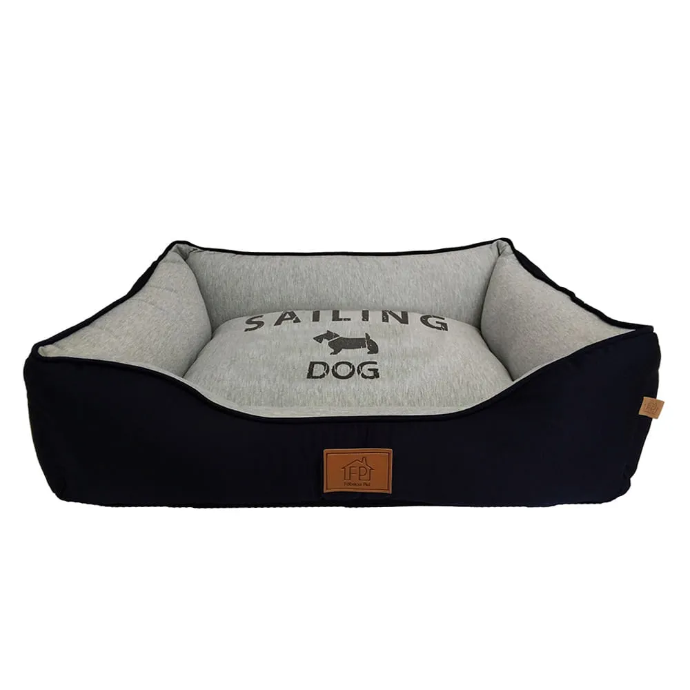
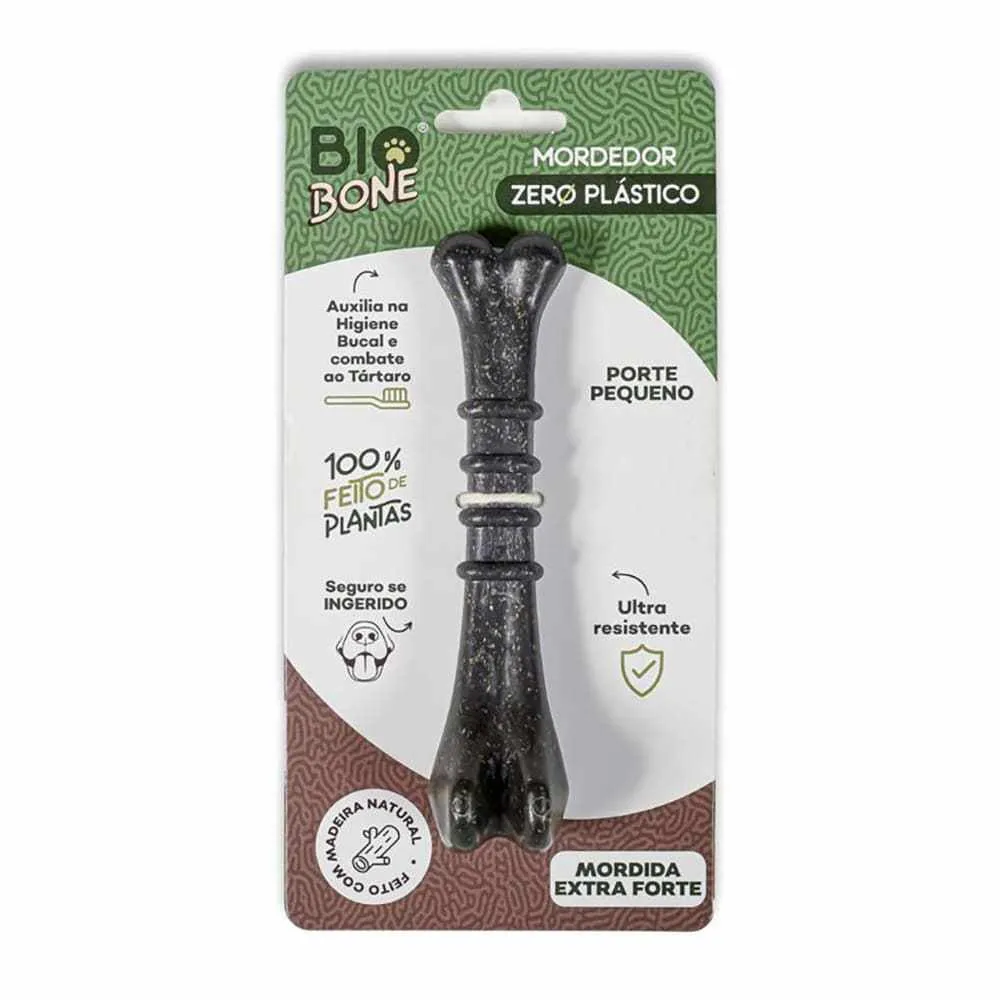

Acessórios
-

Cama London Azul Marinho
A Cama London Fábrica Pet possui design despojado e inovador, desenvolvida em moletom e sarja,
fabricada exclusivamente pela fábrica pet, proporcionando maior conforto e bem-estar ao seu pet.
Enchimento de fibra siliconada, deixando o produto super macio e agradável.
Possui zíper em toda lateral e na almofada, o que facilita a lavagem do forro.
Disponível em quatro tamanhos, trazendo beleza, conforto e praticidade em um só produto!Valor: R$ 242,90
-

Brinquedo Mordedor Ossinho
o primeiro mordedor 100% feito de plantas no Brasil, perfeito para cães com mordidas moderadas.
Produzido com biocomposto natural, incluindo bagaço de laranja, sendo totalmente livre de plástico
e microplásticos, ideal para proporcionar segurança total ao cachorro, eliminando o risco de
ingestão de substâncias nocivas ou pedaços que possam causar problemas no organismo do animal.Valor: R$ 41,50